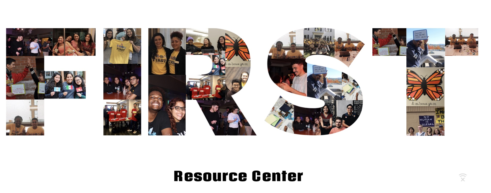

The FIRST Resource Center was founded to create a community of support and develop a network of resources for Tufts University's first generation, low-income, and undocumnted populations. We welcome all backgrounds and hope to ensure first-gens feel empowered and prepared for their academic, social, and professional lives. 
1. Consolidate resources, mentors, and opportunities.
2. Provide a safe and inclusive space for undocumented students, students with intersecting marginalized identities, and first generation students.
3. Serve as a safe space.